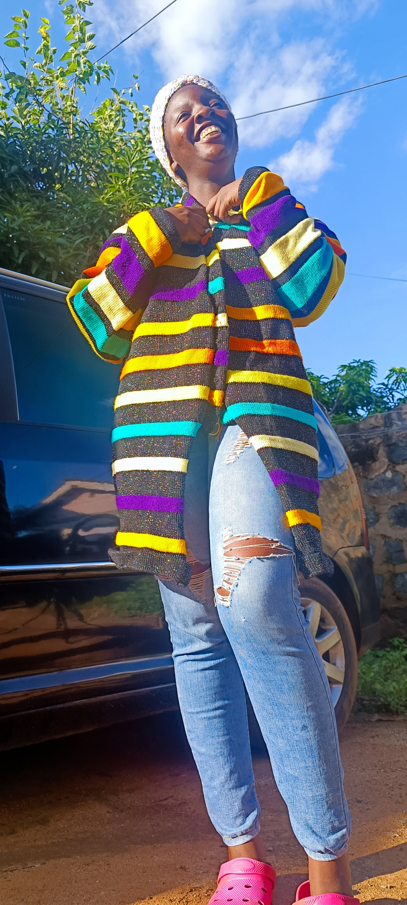
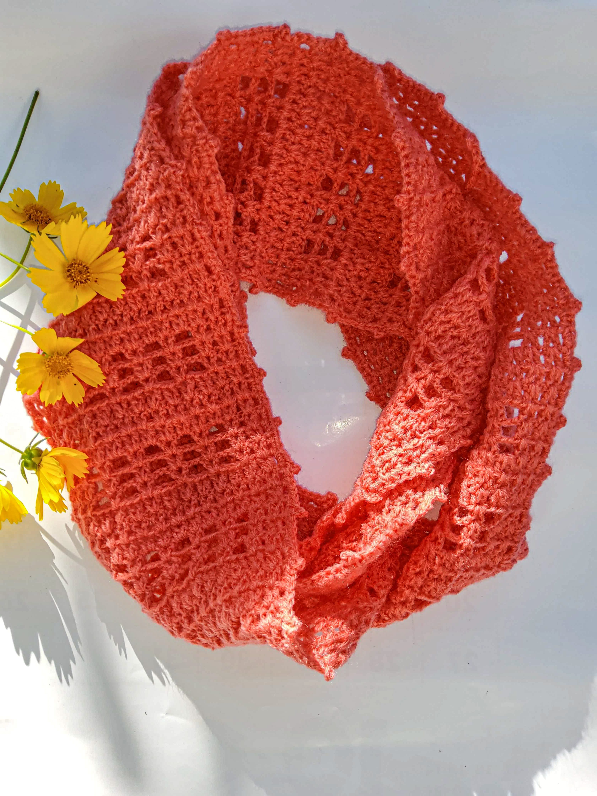
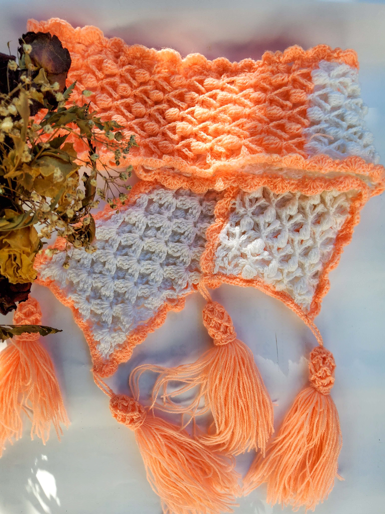

Types of Knitwear
Knitwear covers a wide variety of garments, including:
- Sweater
- "Perhaps the most iconic type of knitwear, sweaters come in countless styles and shapes. From pullovers to cardigans to turtlenecks, knit sweaters provide warmth and are a popular choice for cold weather."

- Scarves and Shawls
- "Knit scarves are a winter wardrobe staple, offering both warmth and fashion. Shawls, often knitted with lace or intricate designs, are worn for more formal occasions or as an accessory"

- Socks
- "Knitted socks are appreciated for their comfort and breathability. Socks can be knit in a variety of techniques, often with patterns such as ribbing or lace for both functionality and aesthetics."

- Gloves and Mittens
- "Knit gloves and mittens provide warmth and can be made in a variety of designs, from simple knit stitches to intricate patterns. They can be fitted or looser, depending on the desired style."
